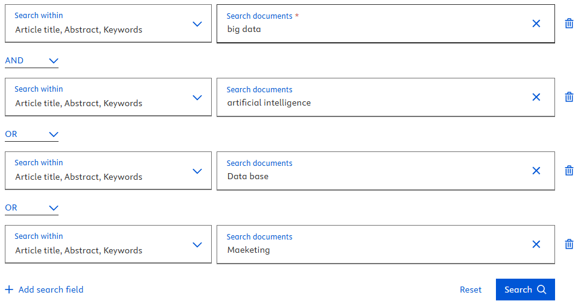

Desarrollo
El tema que se seleccionó fue el de Big Data, y el proceso respectivo de búsqueda para los artículos fue el siguiente:
Explicación de selección de tema
El tema de Big Data fue seleccionado porque representa una de las áreas de mayor crecimiento e impacto en la tecnología actual, con aplicaciones en diversos campos como negocios, salud, ciencia y política.
Cadenas de búsqueda construidas
Se utilizaron combinaciones de varios términos empezando con "big data" al ser el tema principal seleccionado,
para luego combinar con otros términos como "machine learning", "healthcare", "AI", entre otros para tener una vista un poco más específica
respecto al big data.
Donde un ejemplo de estas cadenas hechas son las siguientes:
- "big data" AND (healthcare OR hospital) AND ("machine learning" OR AI) AND privacy
- "big data" AND "artificial intelligence" OR "Data base" OR "Marketing"
- "big data" AND ("data governance" OR "data quality") AND ("metadata management" OR lineage)
Proceso de búsqueda
La búsqueda se realizó mediante el uso de la biblioteca virtual de la universidad, donde están varias plataformas como Springer Link, ScienceDirect, Scopus, que son bases de datos de árticulos científicos, de todas estas bases de datos se escogió Scopus, que es una plataforma a la cual estamos más familiarizados.
En esta base de datos se realizó la búsqueda mediante las cadenas de búsqueda construidas en el paso anterior, tal como se puede ver en la siguiente imagen:
Resultados de búsqueda
De esta forma da los documentos/árticulos relacionados al tema de búsqueda, para luego escoger los 3 árticulos por estudiante, donde el estudiante
tiene la libertad de escoger los árticulos.
Para luego identificar los autores, año de publicación,
fuente o revista de publicación, resumen, palabras clave, por árticulo seleccionado.